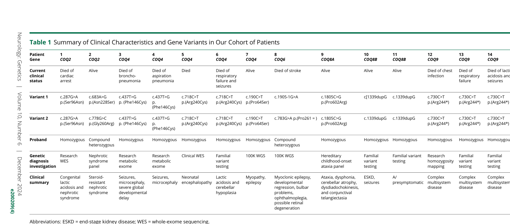

Primary coenzyme Q10 (CoQ10, ubiquinone) deficiency is a clinically and genetically heterogeneous group of autosomal recessive mitochondrial disorders caused by biallelic pathogenic variants in nuclear genes required for endogenous CoQ10 biosynthesis. Reduced tissue CoQ10 impairs electron transfer through the mitochondrial respiratory chain (between complexes I/II and complex III), compromises oxidative phosphorylation, and disrupts additional CoQ-dependent processes (antioxidant defense, pyrimidine and sulfide metabolism, ferroptosis protection), producing multisystem, high-energy-organ disease. Phenotypes range from lethal neonatal encephalomyopathy to childhood/adult-onset cerebellar ataxia, with prominent renal (steroid-resistant nephrotic syndrome), neurologic, cardiac, and sensorineural manifestations that vary by causal gene. It is one of the few potentially treatable mitochondrial disorders: high-dose oral CoQ10 supplementation can reverse or prevent renal disease and ameliorate neurologic features if given before irreversible organ injury.
Ask a research question about Primary Coenzyme Q10 Deficiency. OpenScientist will conduct autonomous deep research using the Disorder Mechanisms Knowledge Base and PubMed literature (typically 10-30 minutes).
Do not include personal health information in your question. Questions and results are cached in your browser's local storage.
name: Primary Coenzyme Q10 Deficiency
creation_date: "2026-06-17T00:00:00Z"
category: Metabolic Disorder
parents:
- Mendelian Disorder
- Metabolic Disorder
- Mitochondrial Disorder
disease_term:
preferred_term: primary coenzyme Q10 deficiency
term:
id: MONDO:0018151
label: coenzyme Q10 deficiency
description: >-
Primary coenzyme Q10 (CoQ10, ubiquinone) deficiency is a clinically and
genetically heterogeneous group of autosomal recessive mitochondrial
disorders caused by biallelic pathogenic variants in nuclear genes required
for endogenous CoQ10 biosynthesis. Reduced tissue CoQ10 impairs electron
transfer through the mitochondrial respiratory chain (between complexes I/II
and complex III), compromises oxidative phosphorylation, and disrupts
additional CoQ-dependent processes (antioxidant defense, pyrimidine and
sulfide metabolism, ferroptosis protection), producing multisystem,
high-energy-organ disease. Phenotypes range from lethal neonatal
encephalomyopathy to childhood/adult-onset cerebellar ataxia, with prominent
renal (steroid-resistant nephrotic syndrome), neurologic, cardiac, and
sensorineural manifestations that vary by causal gene. It is one of the few
potentially treatable mitochondrial disorders: high-dose oral CoQ10
supplementation can reverse or prevent renal disease and ameliorate
neurologic features if given before irreversible organ injury.
synonyms:
- primary CoQ10 deficiency
- primary ubiquinone deficiency
- coenzyme Q10 biosynthesis deficiency
inheritance:
- name: Autosomal Recessive
inheritance_term:
preferred_term: Autosomal recessive inheritance
term:
id: HP:0000007
label: Autosomal recessive inheritance
evidence:
- reference: PMID:37627647
supports: SUPPORT
evidence_source: HUMAN_CLINICAL
snippet: >-
Primary CoQ10 deficiency results from mutations in genes involved in the
CoQ10 biosynthetic pathway.
explanation: >-
Primary CoQ10 deficiency is caused by biallelic pathogenic variants in
CoQ10 biosynthesis genes, inherited in an autosomal recessive pattern.
classifications:
harrisons_chapter:
- classification_value: GENETICS_ENVIRONMENT_DISEASE
evidence:
- reference: PMID:36978966
supports: SUPPORT
evidence_source: HUMAN_CLINICAL
snippet: >-
The CoQ10 biosynthesis pathway consists of several enzymes, which are
encoded by the nuclear DNA.
explanation: >-
Primary CoQ10 deficiency is a Mendelian (autosomal recessive) inborn
error of CoQ10 biosynthesis, placing it in Harrison's Genetics Part.
- classification_value: ENDOCRINOLOGY_METABOLISM
evidence:
- reference: PMID:37508007
supports: SUPPORT
evidence_source: HUMAN_CLINICAL
snippet: >-
Cells rely on endogenous CoQ biosynthesis, and defects in this
still-not-completely understood pathway result in primary CoQ
deficiencies, a group of conditions biochemically characterised by
decreased tissue CoQ levels, which in turn are linked to functional
defects.
explanation: >-
Primary CoQ10 deficiency is an inborn error of metabolism (a defect of
the CoQ10 biosynthetic pathway), placing it in Harrison's
Endocrinology/Metabolism Part.
mechanistic_category:
- classification_value: mitochondrial disease
evidence:
- reference: PMID:39601013
supports: SUPPORT
evidence_source: HUMAN_CLINICAL
snippet: >-
Disorders of coenzyme Q10 (CoQ10) biosynthesis comprise a group of 11
clinically and genetically heterogeneous rare primary mitochondrial
diseases.
explanation: >-
Primary CoQ10 deficiency disorders are classified as primary
mitochondrial diseases.
has_subtypes:
- name: COQ2
display_name: COQ2-related (CoQ10 deficiency-1)
description: >-
COQ2 (4-hydroxybenzoate polyprenyltransferase) was the first CoQ10
biosynthesis gene linked to disease. The phenotype spans infantile
multisystem encephalomyopathy with nephrotic syndrome to isolated
steroid-resistant nephropathy.
genes:
- preferred_term: COQ2
term:
id: hgnc:25223
label: COQ2
inheritance:
- name: Autosomal Recessive
inheritance_term:
preferred_term: Autosomal recessive inheritance
term:
id: HP:0000007
label: Autosomal recessive inheritance
evidence:
- reference: PMID:17186472
supports: SUPPORT
evidence_source: HUMAN_CLINICAL
snippet: >-
The first defect in a CoQ(10) biosynthetic gene, COQ2, was identified in a
child with encephalomyopathy and nephrotic syndrome and in a younger
sibling with only nephropathy.
explanation: >-
COQ2 was the first identified primary CoQ10 biosynthesis gene, causing
encephalomyopathy with nephrotic syndrome.
- name: COQ4
display_name: COQ4-related (lethal neonatal encephalomyopathy)
description: >-
COQ4 variants cause an autosomal recessive lethal neonatal mitochondrial
encephalomyopathy with hypotonia, encephalopathy, seizures, cerebellar
atrophy, cardiomyopathy, and lactic acidosis; a founder mutation occurs in
the Ashkenazi Jewish population, and a high incidence is reported in
southern China.
genes:
- preferred_term: COQ4
term:
id: hgnc:19693
label: COQ4
inheritance:
- name: Autosomal Recessive
inheritance_term:
preferred_term: Autosomal recessive inheritance
term:
id: HP:0000007
label: Autosomal recessive inheritance
evidence:
- reference: PMID:26185144
supports: SUPPORT
evidence_source: HUMAN_CLINICAL
snippet: >-
Mutations in COQ4 cause an autosomal recessive lethal neonatal
mitochondrial encephalomyopathy associated with a founder mutation in the
Ashkenazi Jewish population.
explanation: >-
COQ4 variants produce a severe lethal neonatal encephalomyopathy form of
primary CoQ10 deficiency.
- name: COQ6
display_name: COQ6-related (SRNS with sensorineural deafness)
description: >-
COQ6 (CoQ10 biosynthesis monooxygenase 6) mutations produce early-onset
steroid-resistant nephrotic syndrome with sensorineural deafness, an
oto-renal phenotype reflecting COQ6 expression in podocytes and inner-ear
stria vascularis.
genes:
- preferred_term: COQ6
term:
id: hgnc:20233
label: COQ6
inheritance:
- name: Autosomal Recessive
inheritance_term:
preferred_term: Autosomal recessive inheritance
term:
id: HP:0000007
label: Autosomal recessive inheritance
evidence:
- reference: PMID:21540551
supports: SUPPORT
evidence_source: HUMAN_CLINICAL
snippet: >-
Each mutation was linked to early-onset SRNS with sensorineural deafness.
explanation: >-
COQ6 mutations cause steroid-resistant nephrotic syndrome with
sensorineural deafness.
- name: COQ8A
display_name: COQ8A/ADCK3-related (cerebellar ataxia)
description: >-
The COQ8A (ADCK3) cerebellar-ataxia form (primary CoQ10 deficiency-4,
ARCA2/SCAR9) is curated as a separate dismech entry
(Autosomal_Recessive_Ataxia_Due_to_Ubiquinone_Deficiency). It is
cross-referenced here as an already-split member and is not duplicated in
this umbrella entry.
genes:
- preferred_term: COQ8A
term:
id: hgnc:16812
label: COQ8A
inheritance:
- name: Autosomal Recessive
inheritance_term:
preferred_term: Autosomal recessive inheritance
term:
id: HP:0000007
label: Autosomal recessive inheritance
evidence:
- reference: PMID:36978966
supports: SUPPORT
evidence_source: HUMAN_CLINICAL
snippet: >-
Thus far, 11 disease genes are known (PDSS1, PDSS2, COQ2, COQ4,
COQ5, COQ6, COQ7, COQ8A, COQ8B, COQ9 and HPDL).
explanation: >-
COQ8A is one of the recognized primary CoQ10 biosynthesis disease genes;
its cerebellar-ataxia form is curated in a dedicated dismech entry.
- name: COQ8B
display_name: COQ8B/ADCK4-related (SRNS)
description: >-
COQ8B (ADCK4) mutations cause steroid-resistant nephrotic syndrome,
typically with later (childhood/adolescent) onset than COQ6, and may be
partially responsive to CoQ10 supplementation.
genes:
- preferred_term: COQ8B
term:
id: hgnc:19041
label: COQ8B
inheritance:
- name: Autosomal Recessive
inheritance_term:
preferred_term: Autosomal recessive inheritance
term:
id: HP:0000007
label: Autosomal recessive inheritance
evidence:
- reference: PMID:24270420
supports: SUPPORT
evidence_source: HUMAN_CLINICAL
snippet: >-
Here, using a combination of homozygosity mapping and whole human exome
resequencing, we identified mutations in the aarF domain containing
kinase 4 (ADCK4) gene in 15 individuals with SRNS from 8 unrelated
families.
explanation: >-
COQ8B/ADCK4 mutations cause steroid-resistant nephrotic syndrome through
disrupted CoQ10 biosynthesis.
- name: COQ7
display_name: COQ7-related
description: >-
COQ7 (a CoQ10 biosynthesis hydroxylase) deficiency is a rarer form
associated with multisystem mitochondrial disease.
genes:
- preferred_term: COQ7
term:
id: hgnc:2244
label: COQ7
inheritance:
- name: Autosomal Recessive
inheritance_term:
preferred_term: Autosomal recessive inheritance
term:
id: HP:0000007
label: Autosomal recessive inheritance
evidence:
- reference: PMID:36978966
supports: SUPPORT
evidence_source: HUMAN_CLINICAL
snippet: >-
Thus far, 11 disease genes are known (PDSS1, PDSS2, COQ2, COQ4,
COQ5, COQ6, COQ7, COQ8A, COQ8B, COQ9 and HPDL).
explanation: >-
COQ7 is one of the recognized primary CoQ10 biosynthesis disease genes.
- name: COQ9
display_name: COQ9-related (neonatal encephalomyopathy)
description: >-
COQ9 deficiency causes a severe neonatal-onset encephalomyopathy; the Coq9
knockout mouse recapitulates encephalopathy with cerebral gliosis and
spongiosis.
genes:
- preferred_term: COQ9
term:
id: hgnc:25302
label: COQ9
inheritance:
- name: Autosomal Recessive
inheritance_term:
preferred_term: Autosomal recessive inheritance
term:
id: HP:0000007
label: Autosomal recessive inheritance
evidence:
- reference: PMID:36978966
supports: SUPPORT
evidence_source: HUMAN_CLINICAL
snippet: >-
Thus far, 11 disease genes are known (PDSS1, PDSS2, COQ2, COQ4,
COQ5, COQ6, COQ7, COQ8A, COQ8B, COQ9 and HPDL).
explanation: >-
COQ9 is one of the recognized primary CoQ10 biosynthesis disease genes.
- name: PDSS1
display_name: PDSS1-related
description: >-
PDSS1 encodes a subunit of decaprenyl diphosphate synthase, the first
enzyme of the CoQ10 biosynthetic pathway responsible for assembly of the
polyisoprenoid side chain.
genes:
- preferred_term: PDSS1
term:
id: hgnc:17759
label: PDSS1
inheritance:
- name: Autosomal Recessive
inheritance_term:
preferred_term: Autosomal recessive inheritance
term:
id: HP:0000007
label: Autosomal recessive inheritance
evidence:
- reference: PMID:36978966
supports: SUPPORT
evidence_source: HUMAN_CLINICAL
snippet: >-
Only three enzymes (PDSS1, PDSS2 and COQ2) are required for assembly and
attachment of the polyisoprenoid side chain.
explanation: >-
PDSS1 is one of the three enzymes required for assembly of the
polyisoprenoid side chain in CoQ10 biosynthesis.
- name: PDSS2
display_name: PDSS2-related (Leigh syndrome with nephropathy)
description: >-
PDSS2 encodes a subunit of decaprenyl diphosphate synthase, the first
enzyme of CoQ10 biosynthesis. Pathogenic variants cause severe Leigh
syndrome with nephrotic syndrome and CoQ10 deficiency in muscle and
fibroblasts.
genes:
- preferred_term: PDSS2
term:
id: hgnc:23041
label: PDSS2
inheritance:
- name: Autosomal Recessive
inheritance_term:
preferred_term: Autosomal recessive inheritance
term:
id: HP:0000007
label: Autosomal recessive inheritance
evidence:
- reference: PMID:17186472
supports: SUPPORT
evidence_source: HUMAN_CLINICAL
snippet: >-
Here, we describe an infant with severe Leigh syndrome, nephrotic
syndrome, and CoQ(10) deficiency in muscle and fibroblasts and compound
heterozygous mutations in the PDSS2 gene, which encodes a subunit of
decaprenyl diphosphate synthase, the first enzyme of the CoQ(10)
biosynthetic pathway.
explanation: >-
PDSS2 mutations cause Leigh syndrome with nephropathy and CoQ10
deficiency.
pathophysiology:
- name: Defective CoQ10 Biosynthesis
description: >-
Biallelic pathogenic variants in any of the nuclear CoQ10 biosynthesis
genes (PDSS1, PDSS2, COQ2, COQ4, COQ5, COQ6, COQ7, COQ8A, COQ8B, COQ9)
reduce endogenous CoQ10 production, lowering tissue and cellular CoQ10
levels. This is the shared upstream lesion across all primary CoQ10
deficiency subtypes.
biological_processes:
- preferred_term: ubiquinone biosynthetic process
term:
id: GO:0006744
label: ubiquinone biosynthetic process
modifier: DECREASED
chemical_entities:
- preferred_term: coenzyme Q10
term:
id: CHEBI:46245
label: coenzyme Q10
modifier: DECREASED
evidence:
- reference: PMID:37627647
supports: SUPPORT
evidence_source: HUMAN_CLINICAL
snippet: >-
In man, at least 10 genes are required for the biosynthesis of functional
CoQ10, a mutation in any one of which can result in a deficit in CoQ10
status.
explanation: >-
Defects in any of the CoQ10 biosynthesis genes reduce functional CoQ10,
the shared upstream defect.
downstream:
- target: Impaired Respiratory Chain Electron Transport
description: Reduced CoQ10 impairs electron transfer in the respiratory chain.
causal_link_type: DIRECT
- name: Impaired Respiratory Chain Electron Transport
description: >-
CoQ10 normally shuttles electrons from respiratory chain complexes I and II
to complex III. Reduced CoQ10 impairs this electron transfer, decreasing
oxidative phosphorylation and ATP synthesis, biochemically detectable as
reduced combined complex I+III and II+III activities.
biological_processes:
- preferred_term: respiratory electron transport chain
term:
id: GO:0022904
label: respiratory electron transport chain
modifier: DECREASED
- preferred_term: oxidative phosphorylation
term:
id: GO:0006119
label: oxidative phosphorylation
modifier: DECREASED
evidence:
- reference: PMID:17186472
supports: SUPPORT
evidence_source: HUMAN_CLINICAL
snippet: >-
Coenzyme Q(10) (CoQ(10)) is a vital lipophilic molecule that transfers
electrons from mitochondrial respiratory chain complexes I and II to
complex III.
explanation: >-
CoQ10 transfers electrons from complexes I and II to complex III; its
deficiency impairs respiratory electron transport.
downstream:
- target: Loss of Antioxidant Defense and Multisystem Energy Failure
description: >-
Energy failure combined with loss of CoQ10 antioxidant and redox
functions drives multisystem injury.
causal_link_type: INDIRECT_UNKNOWN_INTERMEDIATES
- name: Loss of Antioxidant Defense and Multisystem Energy Failure
description: >-
Beyond bioenergetics, CoQ10 is a lipid-soluble antioxidant and supports
redox homeostasis, ferroptosis defense, and sulfide oxidation. Combined
energy failure and loss of antioxidant/redox protection produce multisystem
injury, with the nervous system, kidney, heart, and sensory organs
particularly vulnerable. Neurologic injury involves neuronal death,
neuroinflammation, and cerebral gliosis.
cell_types:
- preferred_term: neuron
term:
id: CL:0000540
label: neuron
- preferred_term: podocyte
term:
id: CL:0000653
label: podocyte
biological_processes:
- preferred_term: response to oxidative stress
term:
id: GO:0006979
label: response to oxidative stress
modifier: INCREASED
- preferred_term: ferroptosis
term:
id: GO:0097707
label: ferroptosis
modifier: INCREASED
evidence:
- reference: PMID:36978966
supports: SUPPORT
evidence_source: HUMAN_CLINICAL
snippet: >-
CoQ10 deficiency exerts detrimental effects on the nervous system.
Potential consequences are neuronal death, neuroinflammation and cerebral
gliosis.
explanation: >-
CoQ10 deficiency causes neuronal death, neuroinflammation, and gliosis as
downstream tissue injury.
- reference: PMID:36978966
supports: SUPPORT
evidence_source: HUMAN_CLINICAL
snippet: >-
However, there are many other cellular pathways that also depend on the
CoQ10 supply (redox homeostasis, ferroptosis and sulfide oxidation).
explanation: >-
Non-bioenergetic CoQ10-dependent pathways (redox homeostasis, ferroptosis
defense, sulfide oxidation) are also disrupted.
phenotypes:
- category: Phenotypic abnormality
name: Encephalopathy
description: >-
Encephalopathy with developmental delay/regression is a core neurologic
manifestation, especially in neonatal/infantile-onset forms.
phenotype_term:
preferred_term: Encephalopathy
term:
id: HP:0001298
label: Encephalopathy
evidence:
- reference: PMID:36978966
supports: SUPPORT
evidence_source: HUMAN_CLINICAL
snippet: >-
Clinical features include encephalopathy, regression, movement disorders,
epilepsy and intellectual disability.
explanation: >-
Encephalopathy is a recognized core neurologic feature of CoQ10
deficiency.
- category: Phenotypic abnormality
name: Seizures
description: Epilepsy/seizures are common, particularly in severe early-onset forms.
phenotype_term:
preferred_term: Seizure
term:
id: HP:0001250
label: Seizure
evidence:
- reference: PMID:36978966
supports: SUPPORT
evidence_source: HUMAN_CLINICAL
snippet: >-
Clinical features include encephalopathy, regression, movement disorders,
epilepsy and intellectual disability.
explanation: Epilepsy/seizures are recognized neurologic features.
- category: Phenotypic abnormality
name: Hypotonia
description: Hypotonia is a frequent feature of neonatal-onset COQ4 disease.
phenotype_term:
preferred_term: Hypotonia
term:
id: HP:0001252
label: Hypotonia
evidence:
- reference: PMID:26185144
supports: SUPPORT
evidence_source: HUMAN_CLINICAL
snippet: "Clinical findings included hypotonia (6/6)"
explanation: >-
Hypotonia was present in all six neonatal COQ4 patients in this cohort.
- category: Phenotypic abnormality
name: Cerebellar atrophy
description: >-
Cerebellar atrophy is a characteristic neuroimaging finding, prominent in
COQ8A ataxia and seen in neonatal COQ4 disease.
phenotype_term:
preferred_term: Cerebellar atrophy
term:
id: HP:0001272
label: Cerebellar atrophy
evidence:
- reference: PMID:26185144
supports: SUPPORT
evidence_source: HUMAN_CLINICAL
snippet: "cerebellar atrophy (4/5)"
explanation: >-
Cerebellar atrophy was present in 4 of 5 neonatal COQ4 patients with
imaging.
- category: Phenotypic abnormality
name: Nephrotic syndrome
description: >-
Steroid-resistant nephrotic syndrome is a major renal manifestation in
COQ2, COQ6, and COQ8B forms and can progress to end-stage kidney disease.
phenotype_term:
preferred_term: Steroid-resistant nephrotic syndrome
term:
id: HP:0000100
label: Nephrotic syndrome
evidence:
- reference: PMID:21540551
supports: SUPPORT
evidence_source: HUMAN_CLINICAL
snippet: >-
Each mutation was linked to early-onset SRNS with sensorineural deafness.
explanation: >-
Steroid-resistant nephrotic syndrome is a key renal manifestation, shown
here for COQ6.
- category: Phenotypic abnormality
name: Sensorineural hearing impairment
description: >-
Sensorineural deafness accompanies nephrotic syndrome in the COQ6 oto-renal
form, reflecting COQ6 expression in inner-ear stria vascularis cells.
phenotype_term:
preferred_term: Sensorineural hearing impairment
term:
id: HP:0000407
label: Sensorineural hearing impairment
evidence:
- reference: PMID:21540551
supports: SUPPORT
evidence_source: HUMAN_CLINICAL
snippet: >-
In rats, COQ6 was located within cell processes and the Golgi apparatus
of renal glomerular podocytes and in stria vascularis cells of the inner
ear, consistent with an oto-renal disease phenotype.
explanation: >-
COQ6 expression in inner-ear stria vascularis underlies the sensorineural
deafness of the oto-renal phenotype.
- category: Phenotypic abnormality
name: Cardiomyopathy
description: Cardiomyopathy occurs notably in neonatal COQ4 disease.
phenotype_term:
preferred_term: Cardiomyopathy
term:
id: HP:0001638
label: Cardiomyopathy
evidence:
- reference: PMID:26185144
supports: SUPPORT
evidence_source: HUMAN_CLINICAL
snippet: "cardiomyopathy (5/6)"
explanation: Cardiomyopathy was present in 5 of 6 neonatal COQ4 patients.
- category: Phenotypic abnormality
name: Lactic acidosis
description: >-
Hyperlactatemia/lactic acidosis is a common metabolic marker of impaired
oxidative phosphorylation.
phenotype_term:
preferred_term: Increased circulating lactate concentration
term:
id: HP:0002151
label: Increased circulating lactate concentration
evidence:
- reference: PMID:39398416
supports: SUPPORT
evidence_source: HUMAN_CLINICAL
snippet: >-
Hyperlactatemia was one of the most common manifestations, accounting for
75% of cases (18/24).
explanation: >-
Hyperlactatemia was among the most common manifestations in neonatal COQ4
disease (18/24).
diagnosis:
- name: Molecular genetic testing
description: >-
Genome-wide molecular testing (WES/WGS or multigene panels) is the
recommended first-line diagnostic approach because there are no
pathognomonic blood, muscle, or imaging biomarkers and because early
diagnosis enables potentially disease-modifying treatment.
results: >-
Detection of biallelic pathogenic variants in a CoQ10 biosynthesis gene
confirms the molecular diagnosis and guides treatment.
diagnosis_term:
preferred_term: molecular genetic testing
term:
id: MAXO:0000533
label: molecular genetic testing
evidence:
- reference: PMID:39601013
supports: SUPPORT
evidence_source: HUMAN_CLINICAL
snippet: >-
An early genome-wide diagnostic approach is needed for expeditious
diagnosis of CoQ10 biosynthesis disorder because our study demonstrates
that there are no pathognomonic blood, muscle, or imaging biomarkers of
these diseases.
explanation: >-
Genome-wide molecular testing is recommended because no pathognomonic
biomarkers exist.
biochemical:
- name: Reduced muscle CoQ10 and respiratory chain activity
notes: >-
Biochemical support includes reduced CoQ10 levels in skeletal muscle and
reduced combined activities of respiratory chain complexes I+III and II+III
on muscle homogenates; plasma CoQ10 is not diagnostically reliable.
treatments:
- name: Coenzyme Q10 supplementation
description: >-
High-dose oral CoQ10 (ubiquinone/ubiquinol) supplementation is the only
disease-directed therapy. Early treatment can reverse or prevent renal
disease (around 30 mg/kg/day) and ameliorate neurologic features (up to
70 mg/kg/day); benefit is limited once irreversible organ injury is
established, and severe neonatal forms often respond poorly.
treatment_term:
preferred_term: coenzyme Q10 supplementation
term:
id: MAXO:0010012
label: coenzyme Q10 supplementation
therapeutic_agent:
- preferred_term: coenzyme Q10
term:
id: CHEBI:46245
label: coenzyme Q10
evidence:
- reference: PMID:39601013
supports: SUPPORT
evidence_source: HUMAN_CLINICAL
snippet: >-
We also demonstrate that early diagnosis and treatment of CoQ10
deficiency with oral supplementation (30 mg/kg/d) can reverse renal
manifestations and can completely prevent kidney disease over 10 years of
follow-up.
explanation: Early high-dose oral CoQ10 can reverse and prevent renal disease.
- reference: PMID:39601013
supports: SUPPORT
evidence_source: HUMAN_CLINICAL
snippet: >-
We show that oral doses of CoQ10 up to 70 mg/kg/d were needed to
ameliorate neurologic features.
explanation: >-
Higher doses (up to 70 mg/kg/day) were required to ameliorate neurologic
features.
- name: Idebenone
description: >-
Idebenone, a synthetic CoQ10 analogue, was used as an adjunct to control
seizures in some patients (10-20 mg/kg/day).
treatment_term:
preferred_term: Pharmacotherapy
term:
id: NCIT:C15986
label: Pharmacotherapy
therapeutic_agent:
- preferred_term: idebenone
term:
id: CHEBI:31687
label: idebenone
evidence:
- reference: PMID:39601013
supports: SUPPORT
evidence_source: HUMAN_CLINICAL
snippet: >-
Additional idebenone was required to control seizures in some cases, and
3 children with neonatal-onset neurologic disease died in early childhood
despite receiving high-dose oral CoQ10 from birth.
explanation: Idebenone was used as an adjunct to control seizures in some patients.
prevalence:
- population: General population
percentage: <0.001%
notes: >-
Primary CoQ10 deficiency is very rare, with prevalence/incidence estimated
at less than 1 per 100,000 population.
progression:
- phase: Neonatal/infantile severe multisystem disease
age_range: Neonatal to infantile onset
evidence:
- reference: PMID:39601013
supports: SUPPORT
evidence_source: HUMAN_CLINICAL
snippet: >-
Additional idebenone was required to control seizures in some cases, and
3 children with neonatal-onset neurologic disease died in early childhood
despite receiving high-dose oral CoQ10 from birth.
explanation: >-
Neonatal-onset neurologic disease has poor outcomes even with early
high-dose CoQ10.
animal_models:
- species: Mouse
genotype: Coq9 knockout
description: >-
The Coq9 knockout mouse recapitulates encephalopathy with cerebral gliosis
and spongiosis, modeling the neurologic injury of CoQ10 deficiency.
associated_phenotypes:
- Encephalopathy
- Cerebral gliosis
evidence:
- reference: PMID:36978966
supports: SUPPORT
evidence_source: MODEL_ORGANISM
snippet: >-
CoQ10 deficiency exerts detrimental effects on the nervous system.
Potential consequences are neuronal death, neuroinflammation and cerebral
gliosis.
explanation: >-
Model and human evidence converge on neuronal death, neuroinflammation,
and cerebral gliosis as consequences of CoQ10 deficiency.
clinical_trials: []
datasets: []
notes: >-
This is the umbrella entry for primary (biosynthesis) coenzyme Q10 deficiency.
The COQ8A/ADCK3 cerebellar-ataxia form is curated separately as
Autosomal_Recessive_Ataxia_Due_to_Ubiquinone_Deficiency and is
cross-referenced here (has_subtypes: COQ8A) rather than duplicated. COQ5 and
HPDL are additional reported CoQ10-biosynthesis disease genes but are not yet
given dedicated subtype blocks pending citable gene-specific evidence.
Definition (current understanding): GeneReviews (2023) defines the term primary CoQ10 deficiency as “the group of conditions characterized by a reduction of CoQ10 levels in tissues or cultured cells associated with biallelic pathogenic variants in one of the ten genes involved in the biosynthesis of CoQ10.” (salviati2023primarycoenzymeq10b pages 1-3)
Treatability concept: Multiple recent reviews emphasize it is potentially treatable if recognized early, because once critical-organ injury (kidney/CNS) is established, recovery is limited. (mantle2023primarycoenzymeq10 pages 1-2, mantle2024efficacyandsafety pages 2-3)
Not retrieved in tool evidence: OMIM disease number(s), Orphanet ORPHA code, ICD-10/ICD-11, MeSH. These likely exist but were not present in the obtained full-text extracts.
The knowledge base content here is derived from: - Aggregated disease-level syntheses (GeneReviews-style overview and narrative reviews) (salviati2023primarycoenzymeq10b pages 1-3, mantle2023primarycoenzymeq10 pages 1-2) - Human cohort/case-series clinical evidence (single-center cohort of genetically confirmed cases; neonatal COQ4 case series + literature review) (wahedi2024clinicalfeaturesbiochemistry pages 1-2)
Genetic cause: PCoQD results from pathogenic variants in nuclear genes encoding CoQ10 biosynthesis proteins; recent sources repeatedly emphasize biallelic pathogenic variants (autosomal recessive pattern). (salviati2023primarycoenzymeq10b pages 1-3, salviati2023primarycoenzymeq10b pages 5-7)
No validated protective genetic variants or environmental protective exposures were identified in the retrieved evidence.
Not specifically described in the retrieved sources.
PCoQD is clinically heterogeneous, with core involvement of the CNS, kidney, muscle, and heart. (wahedi2024clinicalfeaturesbiochemistry pages 1-2, salviati2023primarycoenzymeq10b pages 3-5)
Neurologic phenotypes - Encephalopathy, developmental delay/regression, movement disorders, epilepsy, intellectual disability (munch2023neuroimaginginprimary pages 1-3) - In a 14-patient genetically confirmed cohort: seizures in 8/14 (wahedi2024clinicalfeaturesbiochemistry pages 2-3)
Renal phenotypes - Steroid-resistant nephrotic syndrome (SRNS) and progression to ESKD are key manifestations in several gene-specific forms; in the 14-patient cohort, SRNS in 3/14. (wahedi2024clinicalfeaturesbiochemistry pages 2-3)
Metabolic / laboratory phenotypes - Hyperlactatemia: 14-patient cohort had lactate elevated in 5/12 tested (wahedi2024clinicalfeaturesbiochemistry pages 2-3) - Neonatal COQ4 series: hyperlactatemia 18/24 (75%) (reported in abstract; paper retrieved but not fully evidence-extracted here beyond cohort stats in artifact) (wahedi2024clinicalfeaturesbiochemistry pages 2-3)
Neuroimaging phenotypes (MRI patterns) MRI is emphasized as central for assessing neurologic injury. The neuroimaging review states: “Brain magnetic resonance imaging (MRI) is the most important tool for diagnostic evaluation of neurological damage in individuals with CoQ10 deficiency.” (munch2023neuroimaginginprimary pages 1-3) - Common patterns across genes: leukoencephalopathy/white matter changes, cerebral/cerebellar atrophy, Leigh-like basal ganglia/brainstem lesions, stroke-like lesions, lactate peaks on MR spectroscopy. (munch2023neuroimaginginprimary pages 3-4, munch2023neuroimaginginprimary pages 10-12) - COQ8A: cerebellar atrophy is reported in 94% of patients summarized (munch2023neuroimaginginprimary pages 6-9)
(These are ontology suggestions based on the described phenotypes; not explicitly enumerated in the cited papers.) - HP:0001250 Seizures; HP:0001263 Global developmental delay; HP:0001252 Muscular hypotonia; HP:0001251 Ataxia; HP:0001272 Cerebellar atrophy; HP:0004372 Status epilepticus; HP:0001257 Spasticity; HP:0001290 Generalized hypotonia; HP:0003070 Renal insufficiency; HP:0000100 Nephrotic syndrome; HP:0000510 Retinopathy; HP:0000608 Optic atrophy; HP:0001644 Cardiomyopathy.
Direct QoL instrument data (EQ-5D/SF-36/PROMIS) were not located in the retrieved evidence; however, neurological disability (developmental delay, epilepsy, ataxia) and progression to renal failure imply major functional impairment. (salviati2023primarycoenzymeq10b pages 3-5, wahedi2024clinicalfeaturesbiochemistry pages 1-2)
GeneReviews (2023) emphasizes ten genes; a neuroimaging review includes 11 disease genes (adding HPDL). (salviati2023primarycoenzymeq10b pages 1-3, munch2023neuroimaginginprimary pages 1-3)
Canonical CoQ biosynthesis genes (GeneReviews): - PDSS1, PDSS2, COQ2, COQ4, COQ5, COQ6, COQ7, COQ8A, COQ8B, COQ9 (salviati2023primarycoenzymeq10b pages 1-3)
Additional disease gene in neuroimaging review: - HPDL (munch2023neuroimaginginprimary pages 1-3)
Variant-level catalogs (ClinVar allele frequencies; ACMG/AMP classifications per-variant; founder variants) were not extractable from the retrieved evidence chunks. However, the disease mechanism requires biallelic pathogenic variants in the relevant genes. (salviati2023primarycoenzymeq10b pages 5-7)
Not described in the retrieved sources.
PCoQD is a primary genetic biosynthesis defect; no specific toxins, lifestyle factors, or infectious triggers were supported in the retrieved evidence.
Recent reviews stress CoQ10’s roles beyond OXPHOS.
Direct abstract quote (Mantle et al., 2023, Antioxidants; Aug 2023; DOI: https://doi.org/10.3390/antiox12081652): - “Coenzyme Q10 (CoQ10) has a number of vital functions in all cells, both mitochondrial and extra-mitochondrial.” (mantle2023primarycoenzymeq10 pages 1-2)
Neuroimaging review (Mar 2023; DOI: https://doi.org/10.3390/antiox12030718) highlights: - CoQ10’s best-known role is electron transfer/ATP synthesis, but “there are many other cellular pathways that also depend on the CoQ10 supply (redox homeostasis, ferroptosis and sulfide oxidation).” (munch2023neuroimaginginprimary pages 1-3)
Biochemistry review (Jul 2023; DOI: https://doi.org/10.3390/antiox12071469): CoQ is electron acceptor for multiple dehydrogenases (DHODH, ETFDH, SQOR, etc.) and contributes to ferroptosis protection via the FSP1 system. (staiano2023biosynthesisdeficiencyand pages 1-2)
Upstream: biallelic pathogenic variants in CoQ biosynthesis genes → reduced CoQ10 in tissues/cultured cells. (salviati2023primarycoenzymeq10b pages 1-3)
Midstream: impaired electron transfer between respiratory chain complexes → impaired oxidative phosphorylation, reduced ATP production (especially affecting high-energy organs), plus disruption of non-bioenergetic CoQ roles (redox homeostasis, ferroptosis defense, sulfide oxidation; dehydrogenase-linked metabolism). (munch2023neuroimaginginprimary pages 1-3, staiano2023biosynthesisdeficiencyand pages 1-2)
Downstream: neurologic injury is conceptualized as involving “neuronal death, neuroinflammation and cerebral gliosis.” (munch2023neuroimaginginprimary pages 1-3)
Evidence-based processes include: - Oxidative phosphorylation impairment; redox imbalance/oxidative stress; neuroinflammation and gliosis; ferroptosis-related defenses; sulfide oxidation dependence. (munch2023neuroimaginginprimary pages 1-3)
Suggested GO biological process terms (ontology suggestions based on described mechanisms): - GO:0006119 oxidative phosphorylation; GO:0006979 response to oxidative stress; GO:0006954 inflammatory response; GO:0097468 neuronal death; GO:0097034 glial cell activation; GO:0070228 regulation of ferroptosis; GO:1902600 hydrogen sulfide metabolic process.
Suggested CL cell types (ontology suggestions): - CL:0000540 neuron; CL:0000127 astrocyte; CL:0000129 microglial cell; CL:0002301 podocyte (for CoQ nephropathy/SRNS contexts).
Primary locus of dysfunction is mitochondrial: CoQ10 is a lipid molecule of cellular membranes with key respiratory chain function. (munch2023neuroimaginginprimary pages 1-3) Suggested GO cellular component: mitochondrion (GO:0005739), inner mitochondrial membrane (GO:0005743).
Onset is highly variable (neonatal to adulthood) across CoQ biosynthesis disorders. (munch2023neuroimaginginprimary pages 1-3)
GeneReviews summary indicates severe neonatal multisystem disease often has poor outcome, while later-onset cases show better response to high-dose supplementation. (salviati2023primarycoenzymeq10b pages 3-5)
GeneReviews-style text emphasizes biallelic pathogenic variants (autosomal recessive). (salviati2023primarycoenzymeq10b pages 1-3)
Recent pediatric-focused review states prevalence/incidence were estimated as “less than 1 per 100,000 population.” (mantle2024efficacyandsafety pages 2-3)
A different review estimated “approximately 120,000 patients worldwide,” but this appears to be a broad estimate rather than registry-derived epidemiology. (mantle2023primarycoenzymeq10 pages 1-2)
Neonatal COQ4 literature review reported that “Half of the cases are Chinese.” (wahedi2024clinicalfeaturesbiochemistry pages 2-3)
GeneReviews (2023) indicates biochemical testing now has a limited role, used when molecular results are inconclusive or to support VUS interpretation. Key supportive findings include: - “Reduced levels of CoQ10 in skeletal muscle” - “Reduced activities of complex I+III and II+III of the mitochondrial respiratory chain on frozen muscle homogenates” (salviati2023primarycoenzymeq10b pages 5-7)
The same GeneReviews extract states plasma CoQ10 is not diagnostically useful. (salviati2023primarycoenzymeq10b pages 5-7)
A 2024 cohort used high-performance liquid chromatography quantification of CoQ10 in muscle and PBMNCs and respiratory chain enzyme assays. (wahedi2024clinicalfeaturesbiochemistry pages 1-2)
Because “there are no pathognomonic blood, muscle, or imaging biomarkers of these diseases,” an “early genome-wide diagnostic approach” is recommended for expeditious diagnosis. (wahedi2024clinicalfeaturesbiochemistry pages 1-2)
In the neonatal COQ4 series, 20/24 were diagnosed by whole exome sequencing. (wahedi2024clinicalfeaturesbiochemistry pages 2-3)
MRI is emphasized as most important for assessing neurologic damage in CoQ10 deficiency. (munch2023neuroimaginginprimary pages 1-3)
GeneReviews excerpt notes secondary CoQ10 deficiency causes to consider, including respiratory chain defects and multiple acyl-CoA dehydrogenase deficiency. (salviati2023primarycoenzymeq10b pages 5-7)
Neonatal COQ4 mutation series (Frontiers in Pediatrics, Sep 2024; DOI: https://doi.org/10.3389/fped.2024.1410133): - Mortality: Chinese 9/12 (75%) vs other regions 11/12 (91.7%) (P=0.27) - Mean survival time 60.0 ± 98.0 days (95% CI 0–252 days) - CoQ10 treatment: 9/24 received CoQ10, and all 4 surviving patients received CoQ10 supplementation (wahedi2024clinicalfeaturesbiochemistry pages 2-3)
Single-center cohort (Neurology Genetics, Dec 2024; DOI: https://doi.org/10.1212/nxg.0000000000200209): - Despite high-dose CoQ10 from birth, “3 children with neonatal-onset neurologic disease died in early childhood” (wahedi2024clinicalfeaturesbiochemistry pages 1-2)
GeneReviews excerpt indicates severity/onset matters: “Children with severe multisystem CoQ10 deficiency respond poorly to treatment and generally die within the neonatal period or in the first year of life,” whereas “Individuals with later-onset disease show better response to supplementation with high-dose oral CoQ10.” (salviati2023primarycoenzymeq10b pages 3-5)
Oral CoQ10 supplementation is consistently described as the principal/only disease-directed therapy in recent reviews.
Direct abstract quote (Mantle & Hargreaves, Apr 2024; DOI: https://doi.org/10.3390/antiox13050530): - “The only treatment for primary CoQ10 deficiency is oral supplementation with CoQ10,” with typical doses in clinical studies “10–30 mg/kg/day.” (mantle2024efficacyandsafety pages 2-3)
Cohort dosing/outcome evidence (Dec 2024 cohort): - “oral doses of CoQ10 up to 70 mg/kg/d were needed to ameliorate neurologic features” (wahedi2024clinicalfeaturesbiochemistry pages 1-2) - “early diagnosis and treatment… (30 mg/kg/d) can reverse renal manifestations and can completely prevent kidney disease over 10 years of follow-up.” (wahedi2024clinicalfeaturesbiochemistry pages 1-2)
Adjunct therapy: - “Additional idebenone was required to control seizures in some cases” with idebenone used at 10–20 mg/kg/day in that cohort. (wahedi2024clinicalfeaturesbiochemistry pages 2-3)
PBMNC CoQ10 monitoring can demonstrate absorption and track response; the cohort reported PBMNC increases (examples) of +352%, +146% then +320%, +221% in individual patients. (wahedi2024clinicalfeaturesbiochemistry pages 2-3)
Image-based evidence: Wahedi et al. include tables summarizing patient-level dosing/outcomes and a figure showing serial PBMNC CoQ10 monitoring. (wahedi2024clinicalfeaturesbiochemistry media 455edda8, wahedi2024clinicalfeaturesbiochemistry media 782a63c5, wahedi2024clinicalfeaturesbiochemistry media 84940300)
A recent pediatric review notes “no formal clinical trials (randomised controlled or otherwise) have been reported” for primary CoQ10 deficiency treatment. (mantle2024efficacyandsafety pages 2-3)
Primary prevention is not applicable in the classic public-health sense because PCoQD is inherited.
Secondary/tertiary prevention concept (early detection + early therapy): Multiple sources emphasize early diagnosis and prompt high-dose supplementation to prevent irreversible organ damage. (wahedi2024clinicalfeaturesbiochemistry pages 1-2, mantle2024efficacyandsafety pages 2-3)
Genetic counseling and cascade testing are implied by autosomal recessive inheritance, but explicit guideline text was not retrieved.
No naturally occurring veterinary disease analogs were identified in the retrieved evidence.
A diagnostic-methods review states: “Most of the information about the CoQ biosynthesis pathway comes from yeast.” (rodriguezaguilera2017biochemicalassessmentof pages 1-3)
Human fibroblasts are widely used to assess CoQ10 content and functional rescue; the same review notes that “CoQ10 but not other quinones can restore mitochondrial function in deficient human fibroblasts.” (rodriguezaguilera2017biochemicalassessmentof pages 1-3)
References
(salviati2023primarycoenzymeq10b pages 1-3): L Salviati, E Trevisson, C Agosto, M Doimo, and P Navas. Primary coenzyme q10 deficiency overview. Unknown journal, 2023.
(carmody2023themedicalaction pages 5-8): Leigh C. Carmody, Michael A. Gargano, Sabrina Toro, Nicole A. Vasilevsky, Margaret P. Adam, Hannah Blau, Lauren E. Chan, David Gomez-Andres, Rita Horvath, Megan L. Kraus, Markus S. Ladewig, David Lewis-Smith, Hanns Lochmüller, Nicolas A. Matentzoglu, Monica C. Munoz-Torres, Catharina Schuetz, Berthold Seitz, Morgan N. Similuk, Teresa N. Sparks, Timmy Strauss, Emilia M. Swietlik, Rachel Thompson, Xingmin Aaron Zhang, Christopher J. Mungall, Melissa A. Haendel, and Peter N. Robinson. The medical action ontology: a tool for annotating and analyzing treatments and clinical management of human disease. Med, 4:913-927.e3, Dec 2023. URL: https://doi.org/10.1016/j.medj.2023.10.003, doi:10.1016/j.medj.2023.10.003. This article has 15 citations and is from a domain leading peer-reviewed journal.
(wahedi2024clinicalfeaturesbiochemistry pages 1-2): Azizia Wahedi, Sniya Sudhakar, Amanda Lam, Jose Ignacio Rodriguez Ciancio, Philippa Mills, Paul Gissen, Alice Gardham, Jogesh Kapadia, Jane Hassell, Simon Heales, and Shamima Rahman. Clinical features, biochemistry, imaging, and treatment response in a single-center cohort with coenzyme q 10 biosynthesis disorders. Dec 2024. URL: https://doi.org/10.1212/nxg.0000000000200209, doi:10.1212/nxg.0000000000200209. This article has 6 citations.
(salviati2023primarycoenzymeq10b pages 3-5): L Salviati, E Trevisson, C Agosto, M Doimo, and P Navas. Primary coenzyme q10 deficiency overview. Unknown journal, 2023.
(mantle2023primarycoenzymeq10 pages 1-2): David Mantle, Lauren Millichap, Jesus Castro-Marrero, and Iain P. Hargreaves. Primary coenzyme q10 deficiency: an update. Antioxidants, 12:1652, Aug 2023. URL: https://doi.org/10.3390/antiox12081652, doi:10.3390/antiox12081652. This article has 51 citations.
(mantle2024efficacyandsafety pages 2-3): David Mantle and Iain Parry Hargreaves. Efficacy and safety of coenzyme q10 supplementation in neonates, infants and children: an overview. Antioxidants, 13:530, Apr 2024. URL: https://doi.org/10.3390/antiox13050530, doi:10.3390/antiox13050530. This article has 14 citations.
(munch2023neuroimaginginprimary pages 1-3): Juliane Münch, Jannik Prasuhn, Lucia Laugwitz, Cheuk-Wing Fung, Brian H.-Y. Chung, Marcello Bellusci, Ertan Mayatepek, Dirk Klee, and Felix Distelmaier. Neuroimaging in primary coenzyme-q10-deficiency disorders. Antioxidants, 12:718, Mar 2023. URL: https://doi.org/10.3390/antiox12030718, doi:10.3390/antiox12030718. This article has 17 citations.
(munch2023neuroimaginginprimary pages 3-4): Juliane Münch, Jannik Prasuhn, Lucia Laugwitz, Cheuk-Wing Fung, Brian H.-Y. Chung, Marcello Bellusci, Ertan Mayatepek, Dirk Klee, and Felix Distelmaier. Neuroimaging in primary coenzyme-q10-deficiency disorders. Antioxidants, 12:718, Mar 2023. URL: https://doi.org/10.3390/antiox12030718, doi:10.3390/antiox12030718. This article has 17 citations.
(salviati2023primarycoenzymeq10b pages 5-7): L Salviati, E Trevisson, C Agosto, M Doimo, and P Navas. Primary coenzyme q10 deficiency overview. Unknown journal, 2023.
(wahedi2024clinicalfeaturesbiochemistry pages 2-3): Azizia Wahedi, Sniya Sudhakar, Amanda Lam, Jose Ignacio Rodriguez Ciancio, Philippa Mills, Paul Gissen, Alice Gardham, Jogesh Kapadia, Jane Hassell, Simon Heales, and Shamima Rahman. Clinical features, biochemistry, imaging, and treatment response in a single-center cohort with coenzyme q 10 biosynthesis disorders. Dec 2024. URL: https://doi.org/10.1212/nxg.0000000000200209, doi:10.1212/nxg.0000000000200209. This article has 6 citations.
(munch2023neuroimaginginprimary pages 6-9): Juliane Münch, Jannik Prasuhn, Lucia Laugwitz, Cheuk-Wing Fung, Brian H.-Y. Chung, Marcello Bellusci, Ertan Mayatepek, Dirk Klee, and Felix Distelmaier. Neuroimaging in primary coenzyme-q10-deficiency disorders. Antioxidants, 12:718, Mar 2023. URL: https://doi.org/10.3390/antiox12030718, doi:10.3390/antiox12030718. This article has 17 citations.
(mantle2023primarycoenzymeq10 pages 2-4): David Mantle, Lauren Millichap, Jesus Castro-Marrero, and Iain P. Hargreaves. Primary coenzyme q10 deficiency: an update. Antioxidants, 12:1652, Aug 2023. URL: https://doi.org/10.3390/antiox12081652, doi:10.3390/antiox12081652. This article has 51 citations.
(hargreaves2023primarycoenzymeq10 pages 2-4): Iain Parry Hargreaves and David Mantle. Primary coenzyme q10 deficiency: an update. Unknown journal, May 2023. URL: https://doi.org/10.20944/preprints202305.1024.v1, doi:10.20944/preprints202305.1024.v1.
(hargreaves2023primarycoenzymeq10 pages 1-2): Iain Parry Hargreaves and David Mantle. Primary coenzyme q10 deficiency: an update. Unknown journal, May 2023. URL: https://doi.org/10.20944/preprints202305.1024.v1, doi:10.20944/preprints202305.1024.v1.
(munch2023neuroimaginginprimary pages 10-12): Juliane Münch, Jannik Prasuhn, Lucia Laugwitz, Cheuk-Wing Fung, Brian H.-Y. Chung, Marcello Bellusci, Ertan Mayatepek, Dirk Klee, and Felix Distelmaier. Neuroimaging in primary coenzyme-q10-deficiency disorders. Antioxidants, 12:718, Mar 2023. URL: https://doi.org/10.3390/antiox12030718, doi:10.3390/antiox12030718. This article has 17 citations.
(staiano2023biosynthesisdeficiencyand pages 1-2): Carmine Staiano, Laura García-Corzo, David Mantle, Nadia Turton, Lauren E. Millichap, Gloria Brea-Calvo, and Iain Hargreaves. Biosynthesis, deficiency, and supplementation of coenzyme q. Antioxidants, 12:1469, Jul 2023. URL: https://doi.org/10.3390/antiox12071469, doi:10.3390/antiox12071469. This article has 24 citations.
(wahedi2024clinicalfeaturesbiochemistry media 455edda8): Azizia Wahedi, Sniya Sudhakar, Amanda Lam, Jose Ignacio Rodriguez Ciancio, Philippa Mills, Paul Gissen, Alice Gardham, Jogesh Kapadia, Jane Hassell, Simon Heales, and Shamima Rahman. Clinical features, biochemistry, imaging, and treatment response in a single-center cohort with coenzyme q 10 biosynthesis disorders. Dec 2024. URL: https://doi.org/10.1212/nxg.0000000000200209, doi:10.1212/nxg.0000000000200209. This article has 6 citations.
(wahedi2024clinicalfeaturesbiochemistry media 782a63c5): Azizia Wahedi, Sniya Sudhakar, Amanda Lam, Jose Ignacio Rodriguez Ciancio, Philippa Mills, Paul Gissen, Alice Gardham, Jogesh Kapadia, Jane Hassell, Simon Heales, and Shamima Rahman. Clinical features, biochemistry, imaging, and treatment response in a single-center cohort with coenzyme q 10 biosynthesis disorders. Dec 2024. URL: https://doi.org/10.1212/nxg.0000000000200209, doi:10.1212/nxg.0000000000200209. This article has 6 citations.
(wahedi2024clinicalfeaturesbiochemistry media 84940300): Azizia Wahedi, Sniya Sudhakar, Amanda Lam, Jose Ignacio Rodriguez Ciancio, Philippa Mills, Paul Gissen, Alice Gardham, Jogesh Kapadia, Jane Hassell, Simon Heales, and Shamima Rahman. Clinical features, biochemistry, imaging, and treatment response in a single-center cohort with coenzyme q 10 biosynthesis disorders. Dec 2024. URL: https://doi.org/10.1212/nxg.0000000000200209, doi:10.1212/nxg.0000000000200209. This article has 6 citations.
(rodriguezaguilera2017biochemicalassessmentof pages 1-3): Juan Rodríguez-Aguilera, Ana Cortés, Daniel Fernández-Ayala, and Plácido Navas. Biochemical assessment of coenzyme q10 deficiency. Journal of Clinical Medicine, 6:27, Mar 2017. URL: https://doi.org/10.3390/jcm6030027, doi:10.3390/jcm6030027. This article has 71 citations.
(hernandez‐camacho2024prenatalandprogressive pages 1-2): Juan Diego Hernández‐Camacho, Cristina Vicente‐García, Lorena Ardila‐García, Ana Padilla‐Campos, Guillermo López‐Lluch, Carlos Santos‐Ocaña, Peter S. Zammit, Jaime J. Carvajal, Plácido Navas, and Daniel J.M. Fernández‐Ayala. Prenatal and progressive coenzyme q10 administration to mitigate muscle dysfunction in mitochondrial disease. Journal of Cachexia, Sarcopenia and Muscle, 15:2402-2416, Oct 2024. URL: https://doi.org/10.1002/jcsm.13574, doi:10.1002/jcsm.13574. This article has 8 citations and is from a domain leading peer-reviewed journal.
